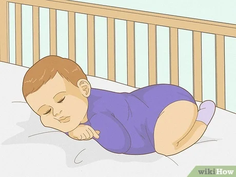

♦ Life has changed now that your baby is here, and you might have lots of questions about what to do. These tips can help first-time parents feel confident about caring for a newborn in no time.
♦ An important part of caring for a newborn is to also take care of
yourself. Consider getting help during this time, which can feel hectic
and a bit overwhelming.
♦ Relatives and friends might want to help. Even if you disagree on some
things, their own experiences might be helpful.
♦ To keep your baby healthy, anyone handling your little one should be up
to date on their vaccines and help only if they feel well. But if you
don't feel up to having guests or have other concerns, don't feel guilty
about limiting visitors..
♦ if you haven't spent a lot of time around newborns, they may seem very
fragile. Here are a few basics to remember:
♦ Wash your hands (or
use a hand sanitizer) before handling your baby. Newborns don't have a
strong immune system yet, so they're at risk for infections. Make sure
that everyone who handles your baby has clean hands
♦ Support your baby's head and neck. Cradle the head when carrying your
baby. And support the head when carrying the baby upright or when you lay
your baby down.
♦ Never shake your baby
whether in play or in frustration. Shaking can cause bleeding in the brain
and sometimes death. If you need to wake your baby, don't do it by
shaking. Instead, tickle your baby's feet or blow gently on a cheek
♦ Always fasten your baby securely when using a carrier, stroller, or car
seat. Limit any activity that could be too rough or bouncy.
♦ Avoid rough play with newborns, such as jiggling them on the knee or
throwing them in the air..
♦ Bonding happens during the first hours and days
after birth when parents make a deep connection with their child. Physical
closeness can help form an emotional link and help your baby develop in
other ways. Another way to think of bonding is "falling in love" with your
baby. Kids thrive from having a parent or other adult in their life who
loves them unconditionally.
♦ Begin bonding by cradling and gently stroking your baby in different
patterns. Another good technique is skin-to-skin contact (also called
kangaroo care), where you hold your newborn against your own chest. This
helps calm and soothe babies and regulate their heartbeat. It’s a good
practice for moms or dads to do
✫ Here’s how to do skin-to-skin contact with your baby:
♦ Avoid using scented perfumes or lotions and stay away from cigarette
smoke beforehand.
♦ Find a comfortable seat in a dimly-lit room. Wear a shirt that opens in
the front. Lay your baby in just a diaper on your bare chest.
♦ Sit quietly, talk softly, hum, sing, or read aloud. Your baby may sleep
during this time.
✫ Helping babies relax can help them feel happier and more comfortable.
Here are some tips on soothing your baby.
♦ Massage: Infant massage may help babies, especially those who
were born early or have medical problems. Some types of massage may
enhance bonding and help babies grow and develop. Many books and videos
cover infant massage — ask your doctor for recommendations. Be careful,
though — babies aren’t as strong as adults, so massage your baby gently.
♦ Sounds: Babies usually love vocal sounds, such as talking,
babbling, singing, and cooing. Your baby will probably enjoy listening to
soft music. Baby rattles and musical mobiles are other good ways to
stimulate your infant's hearing. If your little one is fussy, try singing,
reciting poetry and nursery rhymes, or reading aloud as you sway or rock
your baby gently in a chair.
Some babies can be unusually sensitive to
touch, light, or sound. They might startle and cry easily, sleep less than
expected, or turn their faces away when someone speaks or sings to them.
If that's the case with your baby, keep noise and light levels low to
medium.
♦ Infants enjoy sound. Talk to, read, and sing to your newborn.[9] You can also use baby rattles and musical mobiles with a newborn. If the newborn seems a little fussy, you may sing, read a nursery rhyme, or talk while you hold and rock the baby.[10]
♦ If the newborn turns away, cries, or seems startled by talking or singing, your baby may be sensitive to noise. Lower the volume or use a softer tone to see if this helps./p>
♦ Only the head and neck should be visible once you are finished.
♦ Swaddling is only recommended for babies under two months old.
♦ Do not fold the blanket too tight. Babies should have room to move their feet, hips, and knees. Folding the baby too tight can cause breathing problems and hip development issues.
♦ If you are swaddling to help your baby fall asleep, only place your baby on his back.
♦ Newborns typically sleep 16–18 hours a day. They usually wake up every two to three hours to eat.[23] The length of time your baby sleeps each time will vary. Some babies will start to sleep five to six hours a night around two months of age.[24]
♦ Learn what is normal for your baby.
♦ Newborns do not know the difference between night and day so be prepared to run on very little sleep.
♦ A newborn baby should only sleep on his back. Do not place him on his side or stomach to sleep. Stomach sleeping can lead to Sudden Infant Death Syndrome (SIDS). Stomach sleeping can block the baby's airway and cause the baby to get too hot.
